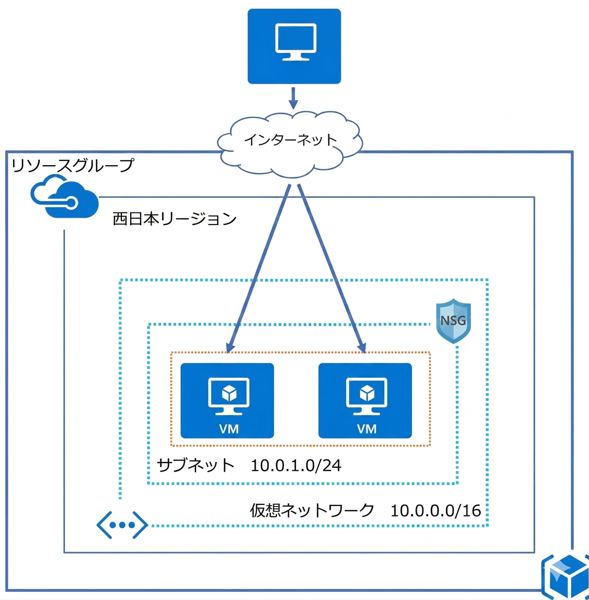
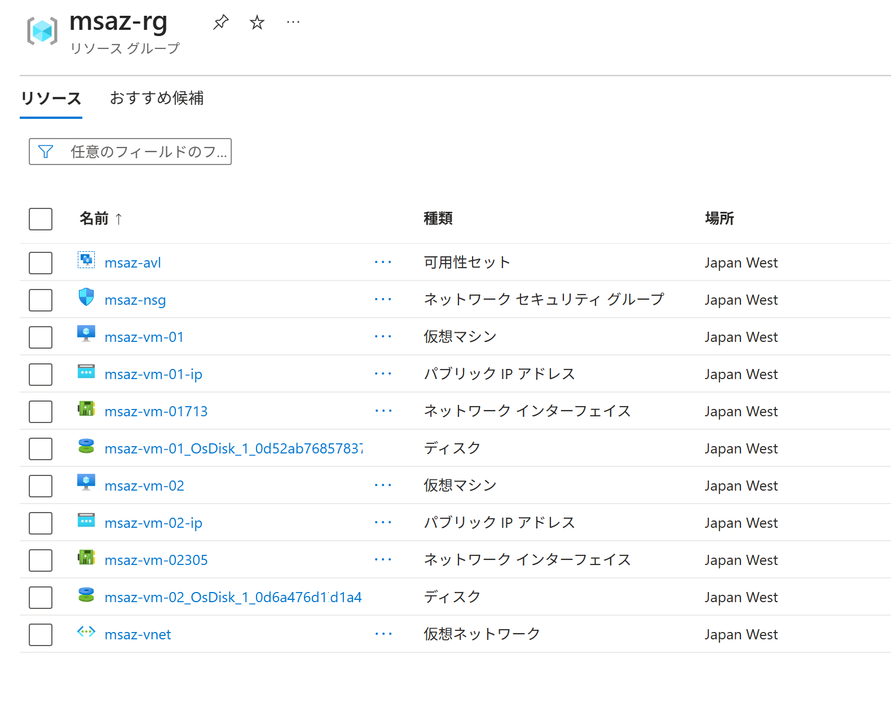
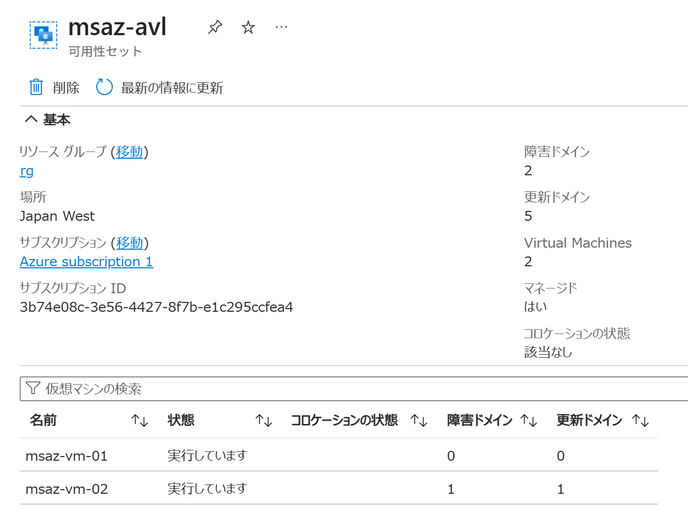
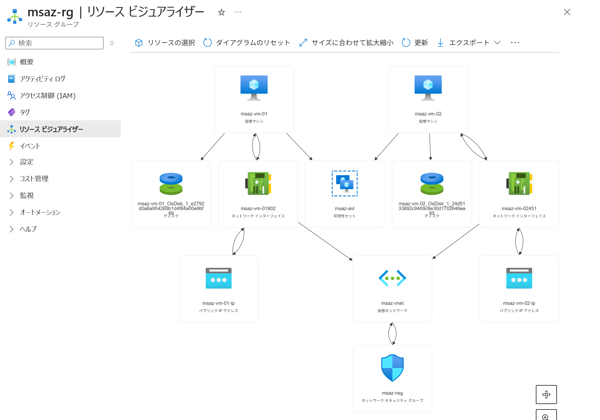
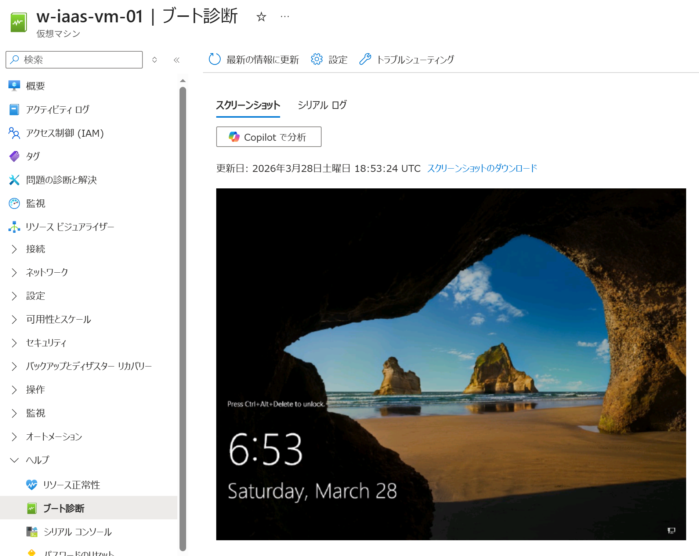

Azure ポータルで 仮想マシンを作成する（Windows 可用性セット）
適用対象: ✔️ 仮想マシン
この演習では、Azure ポータルを使用して 仮想マシンを可用性セットに作成します。
所要時間: 約 15 分
先行の演習
この演習を始める前に 可用性セットを作成する を完了してください。
仮想マシンと可用性セットの関連付け
仮想マシンを可用性セットに関連付けするには、仮想マシンの作成時に可用性セットを指定する必要があります。後から可用性セットに関連付けすることはできません。

タスク 1: 仮想マシンの作成
仮想マシンを2台作成します。
関連付けする可用性セットを指定して作成します。
仮想マシン2台に同じ手順を繰り返します。
- ポータルメニューから [仮想マシン] を選択します。
- [＋ 作成] を選択します。
- [仮想マシン] を選択します。
-
基本 タブで、以下の設定値を入力または確認します。指定のない項目はデフォルトのままにします。
※ パブリック受信ポート では、パブリック インターネットから仮想マシンに 受信を許可するポートを選択します。
1台目 仮想マシン の設定
設定 値 サブスクリプション 任意 リソース グループ msaz-rg仮想マシン名 msaz-vm-01リージョン [(Asia Pacific) Japan West] 可用性オプション [可用性セット] 可用性セット msaz-avlセキュリティの種類 [Standard] イメージ [[smalldisk] Windows Server 2022 Datacenter: Azure Edition - x64 Gen 2] サイズ [Standard_D2als_v6 ...] など ユーザー名 azureuserパスワード Password123!などパブリック受信ポート [なし] ※ 2台目 仮想マシン の設定
設定 値 サブスクリプション 任意 リソース グループ msaz-rg仮想マシン名 msaz-vm-02リージョン [(Asia Pacific) Japan West] 可用性オプション [可用性セット] 可用性セット msaz-avlセキュリティの種類 [Standard] イメージ [[smalldisk] Windows Server 2022 Datacenter: Azure Edition - x64 Gen 2] サイズ [Standard_D2als_v6 ...] など ユーザー名 azureuserパスワード Password123!などパブリック受信ポート [なし] ※
ここでは、サブネットに関連付けされたネットワーク セキュリティ グループ（NSG）で受信を許可するため、パブリック受信ポートは［なし］を選択します。 - [次： ディスク ＞] を選択します。
- ディスク タブで、以下の設定値を入力または確認します。指定のない項目はデフォルトのままにします。
1台目 仮想マシン の設定
設定 値 OS ディスク サイズ [イメージの規定値 (30 GiB)] OS ディスクの種類 [Standard SSD (ローカル冗長ストレージ)] VM と共に削除 [☑️] 2台目 仮想マシン の設定
設定 値 OS ディスク サイズ [イメージの規定値 (30 GiB)] OS ディスクの種類 [Standard SSD (ローカル冗長ストレージ)] VM と共に削除 [☑️] - [次： ネットワーク ＞] を選択します。
- ネットワーク タブで、ネットワーク インターフェイスを以下のように設定します。指定のない項目はデフォルトのままにします。
ネットワーク インターフェイスは仮想マシンの作成中に、同時に作成されます。
ネットワーク インターフェイスを作成しないで、仮想マシンを作成することはできません。1台目 仮想マシン の設定
設定 値 仮想ネットワーク msaz-vnetサブネット web-subnetパブリック IP [(新規) msaz-vm-01-ip] NIC ネットワーク セキュリティ グループ [なし]
ℹ️ 選択されたサブネット 'web-subnet (10.0.1.0/24)' は、既にネットワーク セキュリティ グループ 'msaz-nsg' に関連付けられています。VM が削除されたときにパブリック IP と NIC を削除する [☑️] 2台目 仮想マシン の設定
設定 値 仮想ネットワーク msaz-vnetサブネット web-subnetパブリック IP [(新規) msaz-vm-02-ip] NIC ネットワーク セキュリティ グループ [なし]
ℹ️ 選択されたサブネット 'web-subnet (10.0.1.0/24)' は、既にネットワーク セキュリティ グループ 'msaz-nsg' に関連付けられています。VM が削除されたときにパブリック IP と NIC を削除する [☑️] - [次： 管理 ＞] を選択します。
- 管理 タブで、設定項目を一通り確認します。設定値はデフォルトのままにします。
- [次： 監視 ＞] を選択します。
- 監視 タブで、以下の設定値を入力または確認します。指定のない項目はデフォルトのままにします。
ブート診断は、仮想マシンのブート(起動)時のスクリーンショットをストレージアカウントに保存して、ブート(起動)に問題がないか診断するための機能です。1台目 仮想マシン の設定
設定 値 ブート診断 [マネージド ストレージ アカウントで有効にする (推奨)]
ℹ️ マネージド ストレージ アカウントには通常の料金がかかります。2台目 仮想マシン の設定
設定 値 ブート診断 [マネージド ストレージ アカウントで有効にする (推奨)]
ℹ️ マネージド ストレージ アカウントには通常の料金がかかります。 - [次： 詳細 ＞] を選択します。
- 詳細 タブで、設定項目を一通り確認します。設定値はデフォルトのままにします。
- [次： タグ ＞] を選択します。
- タグ タブで、設定項目を一通り確認します。設定値はデフォルトのままにします。
- [確認および作成] を選択します。
- 設定項目を一通り確認します。
- [作成] を選択します。
- 完了を待ちます。
タスク 2: 作成されたリソースの確認
仮想マシンだけでなく、仮想マシンに関連するリソースも同時に作成されていることを確認します。
- ポータルメニューから [リソース グループ] を選択します。
msaz-rgを選択します。- リソースの一覧が表示されます。
仮想マシンだけでなく ディスク・ネットワーク インターフェイス・パブリック IP アドレスが 2台分作成されたことを確認します。
タスク 3: 作成されたリソースの確認
可用性セットに 仮想マシンが2台 関連付けされていることを確認します。
- ポータルメニューから [リソース グループ] を選択します。
msaz-rgを選択します。msaz-avlを選択します。- 仮想マシン2台が 別々の 障害ドメイン 更新ドメイン に分散配置されていることを確認します。

タスク 4: 作成されたリソースの確認
作成されたリソースがどのように関連付けされているかを確認します。
- ポータルメニューから [リソース グループ] を選択します。
msaz-rgを選択します。- サービスメニューから [リソース ビジュアライザー] を選択します。
- 仮想マシンに関連する複数のリソースがどのように関連付けされているか確認します。

- 仮想マシン01 ➝ 可用性セット
- 仮想マシン02 ➝ 可用性セット
タスク 5: ブート診断の確認
ブート診断を確認します。
ブート診断は、仮想マシンのブート(起動)時のスクリーンショットをストレージアカウントに保存して、ブート(起動)に問題がないか診断するための機能です。
- ポータルメニューから [リソース グループ] を選択します。
msaz-rgを選択します。msaz-vm-01を選択します。- サービスメニューから ヘルプ ＞ [ブート診断] を選択します。
- 仮想マシンのブート(起動)時のスクリーンショットが表示されます。
仮想マシンのWindowsがブート(起動)したことが確認できます。
取得中にエラーが発生しました。 と表示された場合は、少し時間をおいてから再度確認してください。